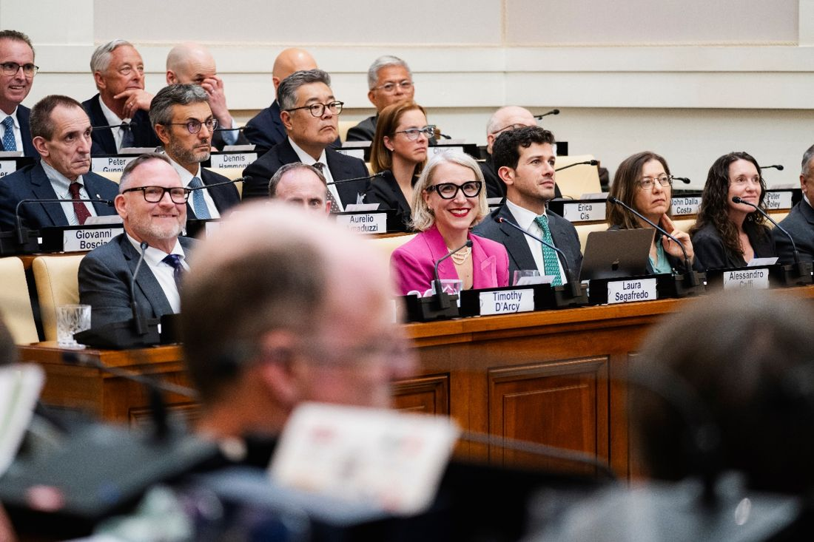
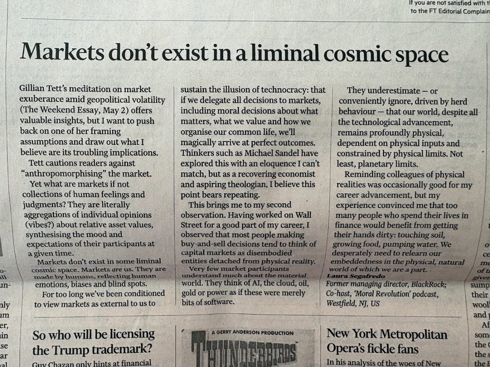

In conver-sation
A selection of published commentary, interviews, and speaking engagements exploring sustainable investing, climate resilience, faith-consistent finance, and the moral and institutional foundations of economic life.

Markets don’t exist in a liminal cosmic space
A letter on the tendency to treat financial markets as detached from the material world, and why recognizing their dependence on natural systems and planetary limits matters.

Nature risk, sustainable investing, and the moral purposes of finance
A conversation with Scott Arnell about my path from energy and climate research to sustainable investing, the role of geospatial data in understanding nature-related financial risk, and the ethical questions beneath investment decisions.
Capital for Climate Action Conference
A contribution to MSCI’s conference on financing the low-carbon transition, highlighting the investment needed to decarbonize high-emitting sectors, and why those sectors are central to the transition, not simply exposures to avoid.
Climate Finance: Recent Developments and Trends
A webinar conversation with Sean Kidney, CEO of the Climate Bonds Initiative, moderated by Ellen Hughes-Cromwick of Third Way, on developments and trends in climate finance.
Financing Climate Change Adaptation in Latin America
A panel discussion on financing climate adaptation in Latin America, bringing an investment perspective to the challenge of building resilience in a changing climate.
Transforming Finance and Economics as Moral Revolution
A conversation with Anthony Annett about the moral imagination needed to reshape economic life. We explore how dignity, solidarity, ecological responsibility, and insights from history and faith traditions can inform more humane institutions.
Catholic investment indices and faith-consistent finance
A presentation at the Vatican in May 2026 sharing research developed with Bountiful Financial on Catholic investment indices, at the Mensuram Bonam conference.
collaborationsGet in touch →